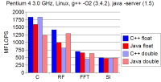

#header( "." "software" "software" )
Software
Open-source software tools for science and engineering.
#content()
The
Mines Java Toolkit
is open-source software for scientific computing.
Why Java?
Why not C++ (or FORTRAN or MATLAB)?
My answer is in this paper:
The Java and C++ platforms for scientific computing
-

-
Scientific computing today requires more than simply processing arrays
of numbers.
Simulations of wave propagation and fluid flow on unstructured grids,
free-form surface modeling, and interactive 3-D graphics are just a few
examples of applications that exploit more complex data structures.
Speed of development, extensive standard software packages, and
cross-platform portability lead us to favor the programming language
Java for today's scientific computing.
-
Hale, D.,
2006,
Center for Wave Phenomena, Report CWP–547.
-
[Report]
Think Java is too slow for array processing?
See the results of our
benchmarks
comparing Java and C++ for digital signal processing.
You might also review the results of the
SciMark 2.0
benchmark provided by the
National Institute of Standards and Technology.
The research highlighted here
was performed using software packages written almost entirely in Java.
#sidebar()
Java packages for scientific computing.
Benchmarks
Java versus C++
for digital signal processing.
SciMark 2.0
#footer()